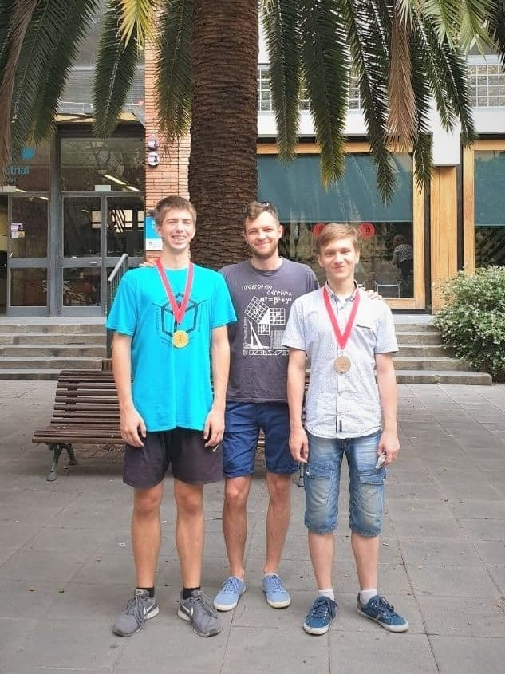

Гайды по Турнирам Юных Математиков
подготовленные руководителями команд ГУО "Гимназия №29 г. Минска"
О чём этот сайт?
Тут собраны рекомендации для участников и руководителей турнира, которые мы можем скромно вам предложить, основываясь на своём опыте. Естественно, советы, которые мы здесь оставим, не являются обязательными и не претендуют на абсолютную правильность излагаемых идей, но в своё время помогали участникам команд Гимназии №29 добиваться в ходе турниров.
Тут можно будет почитать о том, что такое турниры юных математиков, в чём их отличие от олимпиад, как к ним готовиться, как оформлять материалы, как вести себя в ходе боя и о паре других полезных штук.
Так что это за турниры такие?
Турниры Юных Математиков (в народе ТЮМы) являются чем-то средним между олимпиадами и реальными математическими исследованиями. Их специфика заключается в заранее известном наборе задач, на решение которых отводится не менее месяца. Представляются и защищаются работы уже в турнирную неделю в ходе "математических боёв", где команды в каждом из раундов принимают на себя роль Докладчика, Оппонента, Рецензента или Наблюдателя. Результаты боёв зачастую и определяют победителя.
Примечательно то, что не все задачи турнира имеют авторское решение: порой ребята придумывают свои обобщения и методы решения предложенных задач. Более того, каждая команда в ходе боёв не раз разбирает решения других команд, таким образом улучшая свой математический (и не только) аппарат. А ещё это всё просто весело и довольно увлекательно :)

А кто это всё написал вообще?
Материалы подготовлены руководителями команд Гимназии №29 г. Минска, являющимися бывшими участниками турниров, в том числе и международных. На данный момент сия страничка содержит мудрость следующих людей:
- Шило Виталий Олегович, преподаватель ГУО "Гимназия №29 г. Минска"
- Суравежкин Антон Дмитриевич, студент Факультета Прикладной Математики и Информатики БГУ
- Кузьмицкий Владимир Павлович, студент Факультета Прикладной Математики и Информатики БГУ
А зачем это вот всё?
Честно говоря, нам как руководителям не одной команды, показалось утомительным повторять одно и то же разным ребятам разных команд. А пока кроме официальных положений почитать по теме-то и нечего. Да и официальный регламент не расскажет кучи фишек для получения баллов, которые мы каждый турнир ребятам заново рассказывали. Вот теперь можно почитать сие :)